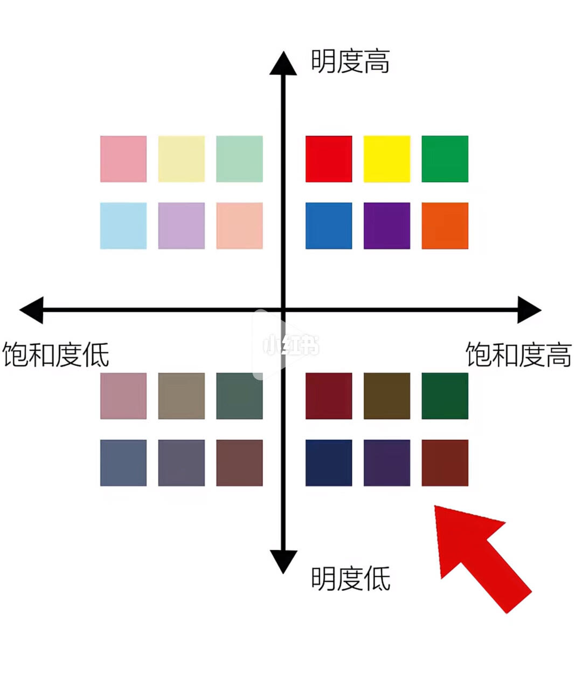

图文实录 · 小红书 · 醉虾巴
穿衣色彩法则1
笔记把穿衣颜色收成明度和饱和度两根轴。亮且艳是热情，暗且艳是沉稳，亮且灰是优雅清新，暗且灰是温柔。
1/1
四个象限
纵轴是明度，上高下低。横轴是饱和度，左低右高。右上是高明度高饱和：鲜红、黄、绿、蓝、紫、橙这类纯色。左上是高明度低饱和：粉、淡黄、薄荷绿这类浅色。左下是低明度低饱和：灰粉、灰绿、石板蓝这类闷色。右下是低明度高饱和：酒红、深绿、海军蓝、深紫。右下角有一支红箭头，指向这一象限里偏暗的红褐色块。
说明文字把四个象限写成穿衣判断：亮度高加饱和度高等于热情；亮度低加饱和度高等于沉稳；亮度高加饱和度低等于优雅清新；亮度低加饱和度低等于温柔。图上没有标出这些气质词，词在笔记正文里。

汇总
两根轴，不是一套肤色诊断
这页只按明度和饱和度分四格。热情、沉稳、清新、温柔是作者给四格起的名字，不是测出来的性格。红箭头指向暗而饱和的一角，图上没有写它代表哪一件衣服。没有肤色、场合和面料。